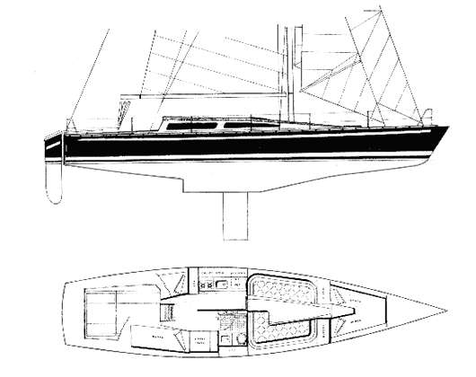

One look at the Adams 13 and you can tell this is not your average blue water cruiser. Narrow and sleek to an extreme with a nearly straight sheerline, it flies in the face of conventional cruising yacht design circa late-1970s. Her displacement and beam measurements reads that of a regular 36 foot cruising yacht, yet her length is 43 feet overall with a long waterline of nearly 41 feet.
The boat was expressly designed for a couple to sail and see the world, the way Adams went about this goal was to stretch the boat to provide extra room below deck, while retaining the lighter displacement and associated rigging thereby keeping costs closer to that of the smaller boat. The payoff is obvious; speed.
Along the performance theme, the boat employs a fractional cutter rig boasting a healthy 1075 square feet of sail area. The rudder is transom-hung with tiller steering for simplicity and reliability. Below the waterline is a keel/centerboard arrangement which when pulled up enhances downwind performance by reducing wetted area and draws a shallow 1.04m of depth allowing close-in anchoring.
Of note is the mainsheet/traveller system which is located right in the middle of the cockpit and can get in the way of cruising activities; on some boats owners have relocated the sheeting control further forward to open up the cockpit area.
There is an Adams 13E variation of the boat better suited to the needs of offshore racing, the "E" representing "extended cockpit" with an open transom. The centerboard is gone in favour of a fixed keel and the rudder relocated under the hull behind a sturdy skeg with wheel steering.
Interiors vary a lot between boats, this is the case with most Adams boats. Many boats were bought as hull and decks and finished professionally by various boatbuilders or fitted out by their owners. The standard accommodation layout provides for four to six people with 5′ 11″ of headroom. The saloon is forward of the centerboard case and provides a cosy area removed from the working part of the accommodation. There are two large quarter berths aft which may be singles or doubles. The saloon can accommodate two extra in single berths if required and in the V-berth are two single berths or a double. A large toilet/shower compartment is enclosed alongside the centerboard case.
